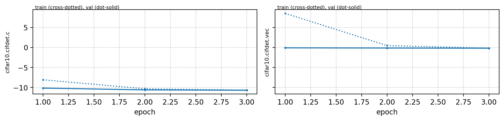
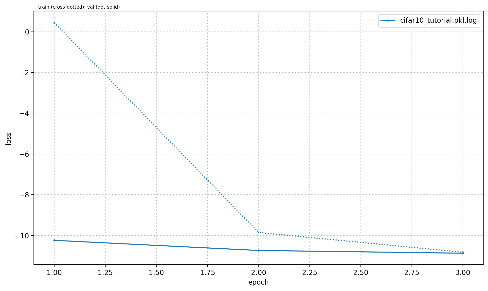
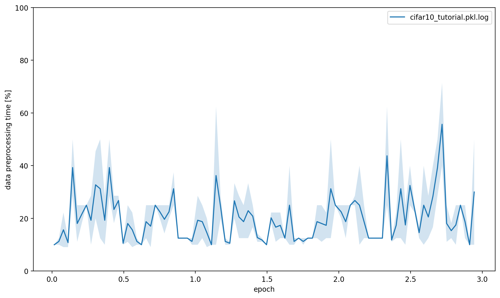
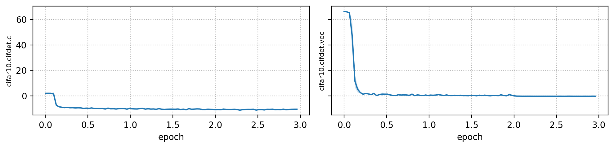
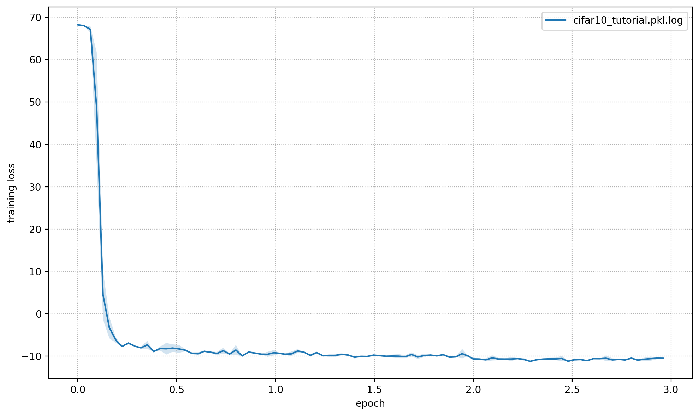
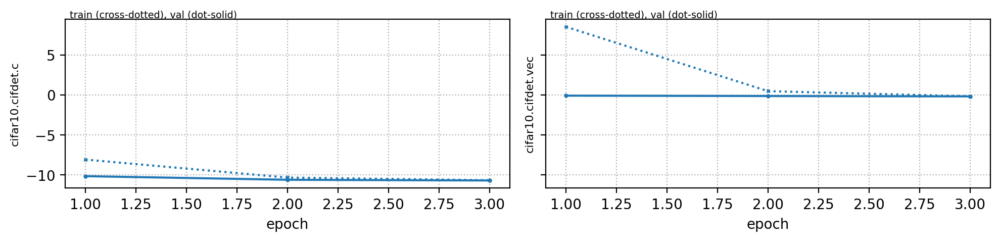
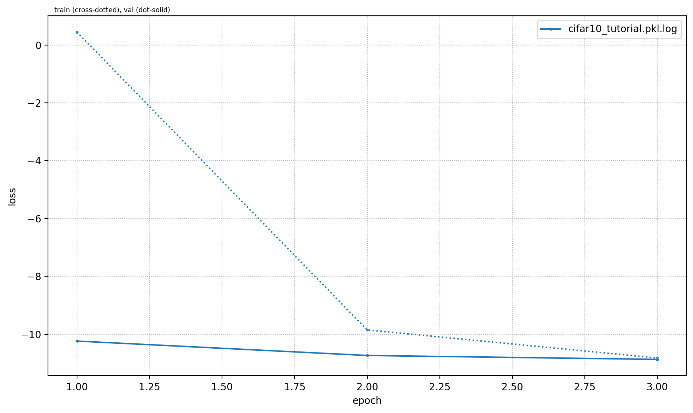
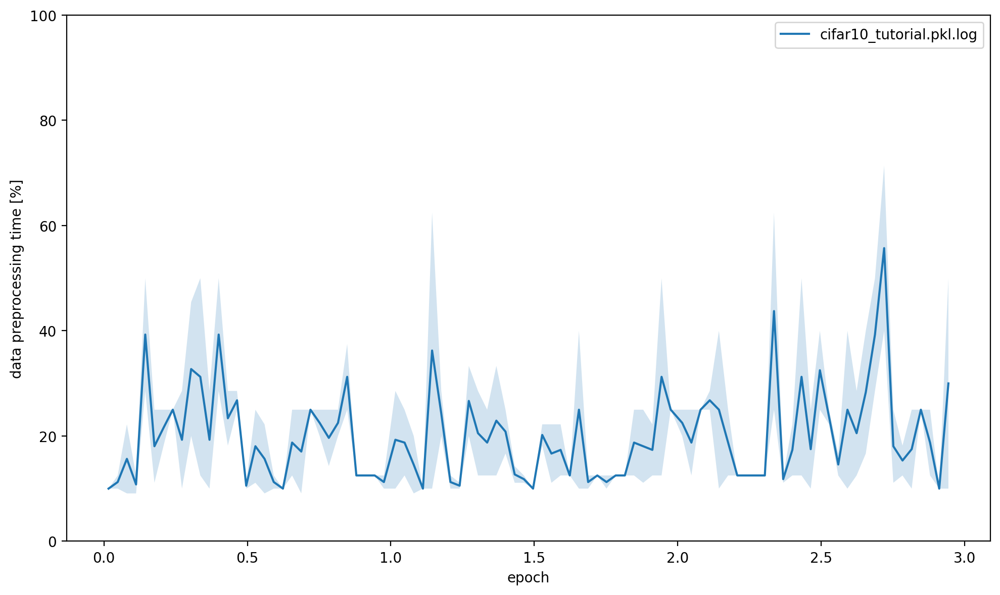
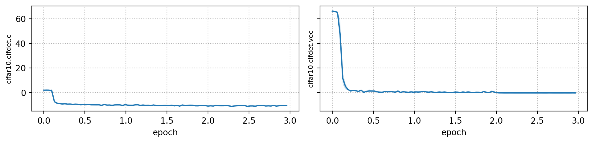
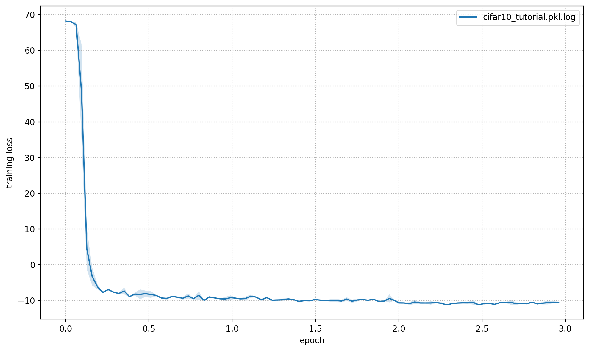

Cifar10#
This page gives a quick introduction to OpenPifPaf’s Cifar10 plugin that is part of openpifpaf.plugins.
It demonstrates the plugin architecture.
There already is a nice dataset for CIFAR10 in torchvision and a related PyTorch tutorial.
The plugin adds a DataModule that uses this dataset.
Let’s start with them setup for this notebook and registering all available OpenPifPaf plugins:
print(openpifpaf.plugin.REGISTERED.keys())
dict_keys(['openpifpaf.plugins.animalpose', 'openpifpaf.plugins.apollocar3d', 'openpifpaf.plugins.cifar10', 'openpifpaf.plugins.coco', 'openpifpaf.plugins.crowdpose', 'openpifpaf.plugins.nuscenes', 'openpifpaf.plugins.posetrack', 'openpifpaf.plugins.wholebody', 'openpifpaf_extras'])
Next, we configure and instantiate the Cifar10 datamodule and look at the configured head metas:
# configure
openpifpaf.plugins.cifar10.datamodule.Cifar10.debug = True
openpifpaf.plugins.cifar10.datamodule.Cifar10.batch_size = 1
# instantiate and inspect
datamodule = openpifpaf.plugins.cifar10.datamodule.Cifar10()
datamodule.set_loader_workers(0) # no multi-processing to see debug outputs in main thread
datamodule.head_metas
[CifDet(name='cifdet', dataset='cifar10', head_index=None, base_stride=None, upsample_stride=1, categories=('plane', 'car', 'bird', 'cat', 'deer', 'dog', 'frog', 'horse', 'ship', 'truck'), training_weights=None)]
We see here that CIFAR10 is being treated as a detection dataset (CifDet) and has 10 categories.
To create a network, we use the factory() function that takes the name of the base network cifar10net and the list of head metas.
net = openpifpaf.network.Factory(base_name='cifar10net').factory(head_metas=datamodule.head_metas)
We can inspect the training data that is returned from datamodule.train_loader():
# configure visualization
openpifpaf.visualizer.Base.set_all_indices(['cifdet:9:regression']) # category 9 = truck
# Create a wrapper for a data loader that iterates over a set of matplotlib axes.
# The only purpose is to set a different matplotlib axis before each call to
# retrieve the next image from the data_loader so that it produces multiple
# debug images in one canvas side-by-side.
def loop_over_axes(axes, data_loader):
previous_common_ax = openpifpaf.visualizer.Base.common_ax
train_loader_iter = iter(data_loader)
for ax in axes.reshape(-1):
openpifpaf.visualizer.Base.common_ax = ax
yield next(train_loader_iter, None)
openpifpaf.visualizer.Base.common_ax = previous_common_ax
# create a canvas and loop over the first few entries in the training data
with openpifpaf.show.canvas(ncols=6, nrows=3, figsize=(10, 5)) as axs:
for images, targets, meta in loop_over_axes(axs, datamodule.train_loader()):
pass

Training#
We train a very small network, cifar10net, for only one epoch. Afterwards, we will investigate its predictions.
%%bash
python -m openpifpaf.train \
--dataset=cifar10 --basenet=cifar10net --log-interval=50 \
--epochs=3 --lr=0.0003 --momentum=0.95 --batch-size=16 \
--lr-warm-up-epochs=0.1 --lr-decay 2.0 2.5 --lr-decay-epochs=0.1 \
--loader-workers=2 --output=cifar10_tutorial.pkl
INFO:__main__:neural network device: cpu (CUDA available: False, count: 0)
INFO:openpifpaf.network.basenetworks:cifar10net: stride = 16, output features = 128
INFO:openpifpaf.network.losses.multi_head:multihead loss: ['cifar10.cifdet.c', 'cifar10.cifdet.vec'], [1.0, 1.0]
INFO:openpifpaf.logger:{'type': 'process', 'argv': ['/opt/hostedtoolcache/Python/3.8.18/x64/lib/python3.8/site-packages/openpifpaf/train.py', '--dataset=cifar10', '--basenet=cifar10net', '--log-interval=50', '--epochs=3', '--lr=0.0003', '--momentum=0.95', '--batch-size=16', '--lr-warm-up-epochs=0.1', '--lr-decay', '2.0', '2.5', '--lr-decay-epochs=0.1', '--loader-workers=2', '--output=cifar10_tutorial.pkl'], 'args': {'output': 'cifar10_tutorial.pkl', 'disable_cuda': False, 'ddp': False, 'local_rank': None, 'sync_batchnorm': True, 'quiet': False, 'debug': False, 'log_stats': False, 'xcit_out_channels': None, 'xcit_out_maxpool': False, 'xcit_pretrained': True, 'mobilenetv3_pretrained': True, 'shufflenetv2k_input_conv2_stride': 0, 'shufflenetv2k_input_conv2_outchannels': None, 'shufflenetv2k_stage4_dilation': 1, 'shufflenetv2k_kernel': 5, 'shufflenetv2k_conv5_as_stage': False, 'shufflenetv2k_instance_norm': False, 'shufflenetv2k_group_norm': False, 'shufflenetv2k_leaky_relu': False, 'mobilenetv2_pretrained': True, 'shufflenetv2_pretrained': True, 'resnet_pretrained': True, 'resnet_pool0_stride': 0, 'resnet_input_conv_stride': 2, 'resnet_input_conv2_stride': 0, 'resnet_block5_dilation': 1, 'resnet_remove_last_block': False, 'swin_drop_path_rate': 0.2, 'swin_input_upsample': False, 'swin_use_fpn': False, 'swin_fpn_out_channels': None, 'swin_fpn_level': 3, 'swin_pretrained': True, 'cf4_dropout': 0.0, 'cf4_inplace_ops': True, 'checkpoint': None, 'basenet': 'cifar10net', 'cross_talk': 0.0, 'download_progress': True, 'head_consolidation': 'filter_and_extend', 'lambdas': None, 'component_lambdas': None, 'auto_tune_mtl': False, 'auto_tune_mtl_variance': False, 'task_sparsity_weight': 0.0, 'focal_alpha': 0.5, 'focal_gamma': 1.0, 'bce_soft_clamp': 5.0, 'bce_background_clamp': -15.0, 'regression_soft_clamp': 5.0, 'b_scale': 1.0, 'scale_log': False, 'scale_soft_clamp': 5.0, 'epochs': 3, 'train_batches': None, 'val_batches': None, 'clip_grad_norm': 0.0, 'clip_grad_value': 0.0, 'log_interval': 50, 'val_interval': 1, 'stride_apply': 1, 'fix_batch_norm': False, 'ema': 0.01, 'profile': None, 'cif_side_length': 4, 'caf_min_size': 3, 'caf_fixed_size': False, 'caf_aspect_ratio': 0.0, 'encoder_suppress_selfhidden': True, 'encoder_suppress_invisible': False, 'encoder_suppress_collision': False, 'momentum': 0.95, 'beta2': 0.999, 'adam_eps': 1e-06, 'nesterov': True, 'weight_decay': 0.0, 'adam': False, 'amsgrad': False, 'lr': 0.0003, 'lr_decay': [2.0, 2.5], 'lr_decay_factor': 0.1, 'lr_decay_epochs': 0.1, 'lr_warm_up_start_epoch': 0, 'lr_warm_up_epochs': 0.1, 'lr_warm_up_factor': 0.001, 'lr_warm_restarts': [], 'lr_warm_restart_duration': 0.5, 'dataset': 'cifar10', 'loader_workers': 2, 'batch_size': 16, 'dataset_weights': None, 'animal_train_annotations': 'data-animalpose/annotations/animal_keypoints_20_train.json', 'animal_val_annotations': 'data-animalpose/annotations/animal_keypoints_20_val.json', 'animal_train_image_dir': 'data-animalpose/images/train/', 'animal_val_image_dir': 'data-animalpose/images/val/', 'animal_square_edge': 513, 'animal_extended_scale': False, 'animal_orientation_invariant': 0.0, 'animal_blur': 0.0, 'animal_augmentation': True, 'animal_rescale_images': 1.0, 'animal_upsample': 1, 'animal_min_kp_anns': 1, 'animal_bmin': 1, 'animal_eval_test2017': False, 'animal_eval_testdev2017': False, 'animal_eval_annotation_filter': True, 'animal_eval_long_edge': 0, 'animal_eval_extended_scale': False, 'animal_eval_orientation_invariant': 0.0, 'apollo_train_annotations': 'data-apollocar3d/annotations/apollo_keypoints_66_train.json', 'apollo_val_annotations': 'data-apollocar3d/annotations/apollo_keypoints_66_val.json', 'apollo_train_image_dir': 'data-apollocar3d/images/train/', 'apollo_val_image_dir': 'data-apollocar3d/images/val/', 'apollo_square_edge': 513, 'apollo_extended_scale': False, 'apollo_orientation_invariant': 0.0, 'apollo_blur': 0.0, 'apollo_augmentation': True, 'apollo_rescale_images': 1.0, 'apollo_upsample': 1, 'apollo_min_kp_anns': 1, 'apollo_bmin': 1, 'apollo_apply_local_centrality': False, 'apollo_eval_annotation_filter': True, 'apollo_eval_long_edge': 0, 'apollo_eval_extended_scale': False, 'apollo_eval_orientation_invariant': 0.0, 'apollo_use_24_kps': False, 'cifar10_root_dir': 'data-cifar10/', 'cifar10_download': False, 'cocodet_train_annotations': 'data-mscoco/annotations/instances_train2017.json', 'cocodet_val_annotations': 'data-mscoco/annotations/instances_val2017.json', 'cocodet_train_image_dir': 'data-mscoco/images/train2017/', 'cocodet_val_image_dir': 'data-mscoco/images/val2017/', 'cocodet_square_edge': 513, 'cocodet_extended_scale': False, 'cocodet_orientation_invariant': 0.0, 'cocodet_blur': 0.0, 'cocodet_augmentation': True, 'cocodet_rescale_images': 1.0, 'cocodet_upsample': 1, 'cocokp_train_annotations': 'data-mscoco/annotations/person_keypoints_train2017.json', 'cocokp_val_annotations': 'data-mscoco/annotations/person_keypoints_val2017.json', 'cocokp_train_image_dir': 'data-mscoco/images/train2017/', 'cocokp_val_image_dir': 'data-mscoco/images/val2017/', 'cocokp_square_edge': 385, 'cocokp_with_dense': False, 'cocokp_extended_scale': False, 'cocokp_orientation_invariant': 0.0, 'cocokp_blur': 0.0, 'cocokp_augmentation': True, 'cocokp_rescale_images': 1.0, 'cocokp_upsample': 1, 'cocokp_min_kp_anns': 1, 'cocokp_bmin': 0.1, 'cocokp_eval_test2017': False, 'cocokp_eval_testdev2017': False, 'coco_eval_annotation_filter': True, 'coco_eval_long_edge': 641, 'coco_eval_extended_scale': False, 'coco_eval_orientation_invariant': 0.0, 'crowdpose_train_annotations': 'data-crowdpose/json/crowdpose_train.json', 'crowdpose_val_annotations': 'data-crowdpose/json/crowdpose_val.json', 'crowdpose_image_dir': 'data-crowdpose/images/', 'crowdpose_square_edge': 385, 'crowdpose_extended_scale': False, 'crowdpose_orientation_invariant': 0.0, 'crowdpose_augmentation': True, 'crowdpose_rescale_images': 1.0, 'crowdpose_upsample': 1, 'crowdpose_min_kp_anns': 1, 'crowdpose_eval_test': False, 'crowdpose_eval_long_edge': 641, 'crowdpose_eval_extended_scale': False, 'crowdpose_eval_orientation_invariant': 0.0, 'crowdpose_index': None, 'nuscenes_train_annotations': '../../../NuScenes/mscoco_style_annotations/nuimages_v1.0-train.json', 'nuscenes_val_annotations': '../../../NuScenes/mscoco_style_annotations/nuimages_v1.0-val.json', 'nuscenes_train_image_dir': '../../../NuScenes/nuimages-v1.0-all-samples', 'nuscenes_val_image_dir': '../../../NuScenes/nuimages-v1.0-all-samples', 'nuscenes_square_edge': 513, 'nuscenes_extended_scale': False, 'nuscenes_orientation_invariant': 0.0, 'nuscenes_blur': 0.0, 'nuscenes_augmentation': True, 'nuscenes_rescale_images': 1.0, 'nuscenes_upsample': 1, 'posetrack2018_train_annotations': 'data-posetrack2018/annotations/train/*.json', 'posetrack2018_val_annotations': 'data-posetrack2018/annotations/val/*.json', 'posetrack2018_eval_annotations': 'data-posetrack2018/annotations/val/*.json', 'posetrack2018_data_root': 'data-posetrack2018', 'posetrack_square_edge': 385, 'posetrack_with_dense': False, 'posetrack_augmentation': True, 'posetrack_rescale_images': 1.0, 'posetrack_upsample': 1, 'posetrack_min_kp_anns': 1, 'posetrack_bmin': 0.1, 'posetrack_sample_pairing': 0.0, 'posetrack_image_augmentations': 0.0, 'posetrack_max_shift': 30.0, 'posetrack_eval_long_edge': 801, 'posetrack_eval_extended_scale': False, 'posetrack_eval_orientation_invariant': 0.0, 'posetrack_ablation_without_tcaf': False, 'posetrack2017_eval_annotations': 'data-posetrack2017/annotations/val/*.json', 'posetrack2017_data_root': 'data-posetrack2017', 'cocokpst_max_shift': 30.0, 'wholebody_train_annotations': 'data-mscoco/annotations/person_keypoints_train2017_wholebody_pifpaf_style.json', 'wholebody_val_annotations': 'data-mscoco/annotations/coco_wholebody_val_v1.0.json', 'wholebody_train_image_dir': 'data-mscoco/images/train2017/', 'wholebody_val_image_dir': 'data-mscoco/images/val2017', 'wholebody_square_edge': 385, 'wholebody_extended_scale': False, 'wholebody_orientation_invariant': 0.0, 'wholebody_blur': 0.0, 'wholebody_augmentation': True, 'wholebody_rescale_images': 1.0, 'wholebody_upsample': 1, 'wholebody_min_kp_anns': 1, 'wholebody_bmin': 1.0, 'wholebody_apply_local_centrality': False, 'wholebody_eval_test2017': False, 'wholebody_eval_testdev2017': False, 'wholebody_eval_annotation_filter': True, 'wholebody_eval_long_edge': 641, 'wholebody_eval_extended_scale': False, 'wholebody_eval_orientation_invariant': 0.0, 'save_all': None, 'show': False, 'image_width': None, 'image_height': None, 'image_dpi_factor': 2.0, 'image_min_dpi': 50.0, 'show_file_extension': 'jpeg', 'textbox_alpha': 0.5, 'text_color': 'white', 'font_size': 8, 'monocolor_connections': False, 'line_width': None, 'skeleton_solid_threshold': 0.5, 'show_box': False, 'white_overlay': False, 'show_joint_scales': False, 'show_joint_confidences': False, 'show_decoding_order': False, 'show_frontier_order': False, 'show_only_decoded_connections': False, 'video_fps': 10, 'video_dpi': 100, 'debug_indices': [], 'device': device(type='cpu'), 'pin_memory': False}, 'version': '0.13.11+13.g9539c07', 'plugin_versions': {'openpifpaf_extras': '0.0.3'}, 'hostname': 'fv-az847-270'}
INFO:openpifpaf.optimize:SGD optimizer
INFO:openpifpaf.optimize:training batches per epoch = 3125
INFO:openpifpaf.network.trainer:{'type': 'config', 'field_names': ['cifar10.cifdet.c', 'cifar10.cifdet.vec']}
INFO:openpifpaf.network.trainer:model written: cifar10_tutorial.pkl.epoch000
INFO:openpifpaf.network.trainer:{'type': 'train', 'epoch': 0, 'batch': 0, 'n_batches': 3125, 'time': 0.019, 'data_time': 0.056, 'lr': 3e-07, 'loss': 68.464, 'head_losses': [1.979, 66.484]}
INFO:openpifpaf.network.trainer:{'type': 'train', 'epoch': 0, 'batch': 50, 'n_batches': 3125, 'time': 0.01, 'data_time': 0.001, 'lr': 9.1e-07, 'loss': 68.036, 'head_losses': [2.136, 65.899]}
INFO:openpifpaf.network.trainer:{'type': 'train', 'epoch': 0, 'batch': 100, 'n_batches': 3125, 'time': 0.01, 'data_time': 0.001, 'lr': 2.74e-06, 'loss': 67.999, 'head_losses': [2.14, 65.859]}
INFO:openpifpaf.network.trainer:{'type': 'train', 'epoch': 0, 'batch': 150, 'n_batches': 3125, 'time': 0.01, 'data_time': 0.001, 'lr': 8.26e-06, 'loss': 68.066, 'head_losses': [2.068, 65.998]}
INFO:openpifpaf.network.trainer:{'type': 'train', 'epoch': 0, 'batch': 200, 'n_batches': 3125, 'time': 0.008, 'data_time': 0.001, 'lr': 2.495e-05, 'loss': 67.941, 'head_losses': [1.982, 65.959]}
INFO:openpifpaf.network.trainer:{'type': 'train', 'epoch': 0, 'batch': 250, 'n_batches': 3125, 'time': 0.009, 'data_time': 0.002, 'lr': 7.536e-05, 'loss': 66.414, 'head_losses': [2.156, 64.259]}
INFO:openpifpaf.network.trainer:{'type': 'train', 'epoch': 0, 'batch': 300, 'n_batches': 3125, 'time': 0.011, 'data_time': 0.001, 'lr': 0.00022757, 'loss': 61.728, 'head_losses': [2.845, 58.883]}
INFO:openpifpaf.network.trainer:{'type': 'train', 'epoch': 0, 'batch': 350, 'n_batches': 3125, 'time': 0.011, 'data_time': 0.001, 'lr': 0.0003, 'loss': 35.325, 'head_losses': [0.341, 34.984]}
INFO:openpifpaf.network.trainer:{'type': 'train', 'epoch': 0, 'batch': 400, 'n_batches': 3125, 'time': 0.008, 'data_time': 0.001, 'lr': 0.0003, 'loss': 10.191, 'head_losses': [-6.458, 16.65]}
INFO:openpifpaf.network.trainer:{'type': 'train', 'epoch': 0, 'batch': 450, 'n_batches': 3125, 'time': 0.007, 'data_time': 0.002, 'lr': 0.0003, 'loss': -1.353, 'head_losses': [-7.998, 6.646]}
INFO:openpifpaf.network.trainer:{'type': 'train', 'epoch': 0, 'batch': 500, 'n_batches': 3125, 'time': 0.01, 'data_time': 0.005, 'lr': 0.0003, 'loss': -0.76, 'head_losses': [-8.403, 7.644]}
INFO:openpifpaf.network.trainer:{'type': 'train', 'epoch': 0, 'batch': 550, 'n_batches': 3125, 'time': 0.008, 'data_time': 0.002, 'lr': 0.0003, 'loss': -5.846, 'head_losses': [-8.572, 2.726]}
INFO:openpifpaf.network.trainer:{'type': 'train', 'epoch': 0, 'batch': 600, 'n_batches': 3125, 'time': 0.009, 'data_time': 0.001, 'lr': 0.0003, 'loss': -6.886, 'head_losses': [-8.894, 2.008]}
INFO:openpifpaf.network.trainer:{'type': 'train', 'epoch': 0, 'batch': 650, 'n_batches': 3125, 'time': 0.011, 'data_time': 0.002, 'lr': 0.0003, 'loss': -5.524, 'head_losses': [-8.759, 3.236]}
INFO:openpifpaf.network.trainer:{'type': 'train', 'epoch': 0, 'batch': 700, 'n_batches': 3125, 'time': 0.008, 'data_time': 0.002, 'lr': 0.0003, 'loss': -7.718, 'head_losses': [-9.056, 1.338]}
INFO:openpifpaf.network.trainer:{'type': 'train', 'epoch': 0, 'batch': 750, 'n_batches': 3125, 'time': 0.008, 'data_time': 0.002, 'lr': 0.0003, 'loss': -7.843, 'head_losses': [-9.269, 1.426]}
INFO:openpifpaf.network.trainer:{'type': 'train', 'epoch': 0, 'batch': 800, 'n_batches': 3125, 'time': 0.008, 'data_time': 0.002, 'lr': 0.0003, 'loss': -7.242, 'head_losses': [-9.065, 1.823]}
INFO:openpifpaf.network.trainer:{'type': 'train', 'epoch': 0, 'batch': 850, 'n_batches': 3125, 'time': 0.007, 'data_time': 0.002, 'lr': 0.0003, 'loss': -6.707, 'head_losses': [-8.83, 2.123]}
INFO:openpifpaf.network.trainer:{'type': 'train', 'epoch': 0, 'batch': 900, 'n_batches': 3125, 'time': 0.01, 'data_time': 0.001, 'lr': 0.0003, 'loss': -7.756, 'head_losses': [-9.356, 1.6]}
INFO:openpifpaf.network.trainer:{'type': 'train', 'epoch': 0, 'batch': 950, 'n_batches': 3125, 'time': 0.011, 'data_time': 0.005, 'lr': 0.0003, 'loss': -7.625, 'head_losses': [-9.165, 1.54]}
INFO:openpifpaf.network.trainer:{'type': 'train', 'epoch': 0, 'batch': 1000, 'n_batches': 3125, 'time': 0.01, 'data_time': 0.002, 'lr': 0.0003, 'loss': -8.346, 'head_losses': [-9.087, 0.741]}
INFO:openpifpaf.network.trainer:{'type': 'train', 'epoch': 0, 'batch': 1050, 'n_batches': 3125, 'time': 0.01, 'data_time': 0.005, 'lr': 0.0003, 'loss': -7.838, 'head_losses': [-9.316, 1.478]}
INFO:openpifpaf.network.trainer:{'type': 'train', 'epoch': 0, 'batch': 1100, 'n_batches': 3125, 'time': 0.008, 'data_time': 0.001, 'lr': 0.0003, 'loss': -6.413, 'head_losses': [-9.202, 2.789]}
INFO:openpifpaf.network.trainer:{'type': 'train', 'epoch': 0, 'batch': 1150, 'n_batches': 3125, 'time': 0.007, 'data_time': 0.002, 'lr': 0.0003, 'loss': -8.344, 'head_losses': [-9.606, 1.262]}
INFO:openpifpaf.network.trainer:{'type': 'train', 'epoch': 0, 'batch': 1200, 'n_batches': 3125, 'time': 0.01, 'data_time': 0.001, 'lr': 0.0003, 'loss': -8.936, 'head_losses': [-9.439, 0.503]}
INFO:openpifpaf.network.trainer:{'type': 'train', 'epoch': 0, 'batch': 1250, 'n_batches': 3125, 'time': 0.007, 'data_time': 0.002, 'lr': 0.0003, 'loss': -9.018, 'head_losses': [-9.103, 0.086]}
INFO:openpifpaf.network.trainer:{'type': 'train', 'epoch': 0, 'batch': 1300, 'n_batches': 3125, 'time': 0.01, 'data_time': 0.005, 'lr': 0.0003, 'loss': -8.71, 'head_losses': [-9.425, 0.716]}
INFO:openpifpaf.network.trainer:{'type': 'train', 'epoch': 0, 'batch': 1350, 'n_batches': 3125, 'time': 0.007, 'data_time': 0.002, 'lr': 0.0003, 'loss': -7.807, 'head_losses': [-9.303, 1.496]}
INFO:openpifpaf.network.trainer:{'type': 'train', 'epoch': 0, 'batch': 1400, 'n_batches': 3125, 'time': 0.011, 'data_time': 0.002, 'lr': 0.0003, 'loss': -9.678, 'head_losses': [-9.833, 0.155]}
INFO:openpifpaf.network.trainer:{'type': 'train', 'epoch': 0, 'batch': 1450, 'n_batches': 3125, 'time': 0.007, 'data_time': 0.002, 'lr': 0.0003, 'loss': -6.941, 'head_losses': [-9.638, 2.696]}
INFO:openpifpaf.network.trainer:{'type': 'train', 'epoch': 0, 'batch': 1500, 'n_batches': 3125, 'time': 0.008, 'data_time': 0.002, 'lr': 0.0003, 'loss': -7.277, 'head_losses': [-9.138, 1.86]}
INFO:openpifpaf.network.trainer:{'type': 'train', 'epoch': 0, 'batch': 1550, 'n_batches': 3125, 'time': 0.01, 'data_time': 0.001, 'lr': 0.0003, 'loss': -9.03, 'head_losses': [-9.94, 0.91]}
INFO:openpifpaf.network.trainer:{'type': 'train', 'epoch': 0, 'batch': 1600, 'n_batches': 3125, 'time': 0.009, 'data_time': 0.001, 'lr': 0.0003, 'loss': -9.296, 'head_losses': [-9.84, 0.544]}
INFO:openpifpaf.network.trainer:{'type': 'train', 'epoch': 0, 'batch': 1650, 'n_batches': 3125, 'time': 0.009, 'data_time': 0.001, 'lr': 0.0003, 'loss': -7.389, 'head_losses': [-9.579, 2.19]}
INFO:openpifpaf.network.trainer:{'type': 'train', 'epoch': 0, 'batch': 1700, 'n_batches': 3125, 'time': 0.008, 'data_time': 0.002, 'lr': 0.0003, 'loss': -8.869, 'head_losses': [-9.673, 0.804]}
INFO:openpifpaf.network.trainer:{'type': 'train', 'epoch': 0, 'batch': 1750, 'n_batches': 3125, 'time': 0.011, 'data_time': 0.001, 'lr': 0.0003, 'loss': -8.412, 'head_losses': [-9.146, 0.733]}
INFO:openpifpaf.network.trainer:{'type': 'train', 'epoch': 0, 'batch': 1800, 'n_batches': 3125, 'time': 0.009, 'data_time': 0.002, 'lr': 0.0003, 'loss': -9.548, 'head_losses': [-9.939, 0.392]}
INFO:openpifpaf.network.trainer:{'type': 'train', 'epoch': 0, 'batch': 1850, 'n_batches': 3125, 'time': 0.01, 'data_time': 0.001, 'lr': 0.0003, 'loss': -9.154, 'head_losses': [-9.683, 0.529]}
INFO:openpifpaf.network.trainer:{'type': 'train', 'epoch': 0, 'batch': 1900, 'n_batches': 3125, 'time': 0.008, 'data_time': 0.001, 'lr': 0.0003, 'loss': -9.141, 'head_losses': [-9.602, 0.461]}
INFO:openpifpaf.network.trainer:{'type': 'train', 'epoch': 0, 'batch': 1950, 'n_batches': 3125, 'time': 0.01, 'data_time': 0.001, 'lr': 0.0003, 'loss': -9.827, 'head_losses': [-10.052, 0.225]}
INFO:openpifpaf.network.trainer:{'type': 'train', 'epoch': 0, 'batch': 2000, 'n_batches': 3125, 'time': 0.01, 'data_time': 0.001, 'lr': 0.0003, 'loss': -9.09, 'head_losses': [-10.116, 1.025]}
INFO:openpifpaf.network.trainer:{'type': 'train', 'epoch': 0, 'batch': 2050, 'n_batches': 3125, 'time': 0.008, 'data_time': 0.001, 'lr': 0.0003, 'loss': -8.727, 'head_losses': [-9.572, 0.845]}
INFO:openpifpaf.network.trainer:{'type': 'train', 'epoch': 0, 'batch': 2100, 'n_batches': 3125, 'time': 0.008, 'data_time': 0.002, 'lr': 0.0003, 'loss': -9.333, 'head_losses': [-9.765, 0.432]}
INFO:openpifpaf.network.trainer:{'type': 'train', 'epoch': 0, 'batch': 2150, 'n_batches': 3125, 'time': 0.011, 'data_time': 0.001, 'lr': 0.0003, 'loss': -8.919, 'head_losses': [-9.885, 0.966]}
INFO:openpifpaf.network.trainer:{'type': 'train', 'epoch': 0, 'batch': 2200, 'n_batches': 3125, 'time': 0.008, 'data_time': 0.002, 'lr': 0.0003, 'loss': -9.792, 'head_losses': [-10.354, 0.563]}
INFO:openpifpaf.network.trainer:{'type': 'train', 'epoch': 0, 'batch': 2250, 'n_batches': 3125, 'time': 0.008, 'data_time': 0.002, 'lr': 0.0003, 'loss': -9.058, 'head_losses': [-10.128, 1.069]}
INFO:openpifpaf.network.trainer:{'type': 'train', 'epoch': 0, 'batch': 2300, 'n_batches': 3125, 'time': 0.008, 'data_time': 0.002, 'lr': 0.0003, 'loss': -8.069, 'head_losses': [-9.15, 1.08]}
INFO:openpifpaf.network.trainer:{'type': 'train', 'epoch': 0, 'batch': 2350, 'n_batches': 3125, 'time': 0.01, 'data_time': 0.002, 'lr': 0.0003, 'loss': -9.474, 'head_losses': [-9.885, 0.411]}
INFO:openpifpaf.network.trainer:{'type': 'train', 'epoch': 0, 'batch': 2400, 'n_batches': 3125, 'time': 0.008, 'data_time': 0.002, 'lr': 0.0003, 'loss': -9.718, 'head_losses': [-9.922, 0.204]}
INFO:openpifpaf.network.trainer:{'type': 'train', 'epoch': 0, 'batch': 2450, 'n_batches': 3125, 'time': 0.008, 'data_time': 0.002, 'lr': 0.0003, 'loss': -9.394, 'head_losses': [-10.176, 0.783]}
INFO:openpifpaf.network.trainer:{'type': 'train', 'epoch': 0, 'batch': 2500, 'n_batches': 3125, 'time': 0.007, 'data_time': 0.001, 'lr': 0.0003, 'loss': -9.816, 'head_losses': [-10.12, 0.303]}
INFO:openpifpaf.network.trainer:{'type': 'train', 'epoch': 0, 'batch': 2550, 'n_batches': 3125, 'time': 0.01, 'data_time': 0.002, 'lr': 0.0003, 'loss': -7.401, 'head_losses': [-9.845, 2.444]}
INFO:openpifpaf.network.trainer:{'type': 'train', 'epoch': 0, 'batch': 2600, 'n_batches': 3125, 'time': 0.008, 'data_time': 0.002, 'lr': 0.0003, 'loss': -10.006, 'head_losses': [-10.143, 0.137]}
INFO:openpifpaf.network.trainer:{'type': 'train', 'epoch': 0, 'batch': 2650, 'n_batches': 3125, 'time': 0.008, 'data_time': 0.003, 'lr': 0.0003, 'loss': -9.995, 'head_losses': [-10.337, 0.343]}
INFO:openpifpaf.network.trainer:{'type': 'train', 'epoch': 0, 'batch': 2700, 'n_batches': 3125, 'time': 0.008, 'data_time': 0.002, 'lr': 0.0003, 'loss': -9.259, 'head_losses': [-9.947, 0.688]}
INFO:openpifpaf.network.trainer:{'type': 'train', 'epoch': 0, 'batch': 2750, 'n_batches': 3125, 'time': 0.008, 'data_time': 0.001, 'lr': 0.0003, 'loss': -8.883, 'head_losses': [-9.853, 0.97]}
INFO:openpifpaf.network.trainer:{'type': 'train', 'epoch': 0, 'batch': 2800, 'n_batches': 3125, 'time': 0.008, 'data_time': 0.001, 'lr': 0.0003, 'loss': -9.097, 'head_losses': [-9.558, 0.461]}
INFO:openpifpaf.network.trainer:{'type': 'train', 'epoch': 0, 'batch': 2850, 'n_batches': 3125, 'time': 0.008, 'data_time': 0.001, 'lr': 0.0003, 'loss': -9.569, 'head_losses': [-10.176, 0.607]}
INFO:openpifpaf.network.trainer:{'type': 'train', 'epoch': 0, 'batch': 2900, 'n_batches': 3125, 'time': 0.008, 'data_time': 0.001, 'lr': 0.0003, 'loss': -9.628, 'head_losses': [-9.787, 0.159]}
INFO:openpifpaf.network.trainer:{'type': 'train', 'epoch': 0, 'batch': 2950, 'n_batches': 3125, 'time': 0.008, 'data_time': 0.001, 'lr': 0.0003, 'loss': -9.539, 'head_losses': [-9.98, 0.441]}
INFO:openpifpaf.network.trainer:{'type': 'train', 'epoch': 0, 'batch': 3000, 'n_batches': 3125, 'time': 0.008, 'data_time': 0.001, 'lr': 0.0003, 'loss': -10.205, 'head_losses': [-10.522, 0.317]}
INFO:openpifpaf.network.trainer:{'type': 'train', 'epoch': 0, 'batch': 3050, 'n_batches': 3125, 'time': 0.008, 'data_time': 0.001, 'lr': 0.0003, 'loss': -9.032, 'head_losses': [-10.142, 1.11]}
INFO:openpifpaf.network.trainer:{'type': 'train', 'epoch': 0, 'batch': 3100, 'n_batches': 3125, 'time': 0.01, 'data_time': 0.001, 'lr': 0.0003, 'loss': -9.869, 'head_losses': [-10.023, 0.154]}
INFO:openpifpaf.network.trainer:applying ema
INFO:openpifpaf.network.trainer:{'type': 'train-epoch', 'epoch': 1, 'loss': 0.44212, 'head_losses': [-8.07988, 8.52201], 'time': 33.6, 'n_clipped_grad': 0, 'max_norm': 0.0}
INFO:openpifpaf.network.trainer:model written: cifar10_tutorial.pkl.epoch001
INFO:openpifpaf.network.trainer:{'type': 'val-epoch', 'epoch': 1, 'loss': -10.23996, 'head_losses': [-10.15375, -0.08621], 'time': 5.1}
INFO:openpifpaf.network.trainer:restoring params from before ema
INFO:openpifpaf.network.trainer:{'type': 'train', 'epoch': 1, 'batch': 0, 'n_batches': 3125, 'time': 0.016, 'data_time': 0.047, 'lr': 0.0003, 'loss': -8.611, 'head_losses': [-9.245, 0.635]}
INFO:openpifpaf.network.trainer:{'type': 'train', 'epoch': 1, 'batch': 50, 'n_batches': 3125, 'time': 0.01, 'data_time': 0.001, 'lr': 0.0003, 'loss': -9.566, 'head_losses': [-10.205, 0.638]}
INFO:openpifpaf.network.trainer:{'type': 'train', 'epoch': 1, 'batch': 100, 'n_batches': 3125, 'time': 0.007, 'data_time': 0.002, 'lr': 0.0003, 'loss': -9.166, 'head_losses': [-9.865, 0.699]}
INFO:openpifpaf.network.trainer:{'type': 'train', 'epoch': 1, 'batch': 150, 'n_batches': 3125, 'time': 0.008, 'data_time': 0.002, 'lr': 0.0003, 'loss': -9.477, 'head_losses': [-10.099, 0.622]}
INFO:openpifpaf.network.trainer:{'type': 'train', 'epoch': 1, 'batch': 200, 'n_batches': 3125, 'time': 0.008, 'data_time': 0.001, 'lr': 0.0003, 'loss': -9.712, 'head_losses': [-10.213, 0.501]}
INFO:openpifpaf.network.trainer:{'type': 'train', 'epoch': 1, 'batch': 250, 'n_batches': 3125, 'time': 0.011, 'data_time': 0.001, 'lr': 0.0003, 'loss': -8.959, 'head_losses': [-9.966, 1.007]}
INFO:openpifpaf.network.trainer:{'type': 'train', 'epoch': 1, 'batch': 300, 'n_batches': 3125, 'time': 0.01, 'data_time': 0.002, 'lr': 0.0003, 'loss': -10.08, 'head_losses': [-10.456, 0.375]}
INFO:openpifpaf.network.trainer:{'type': 'train', 'epoch': 1, 'batch': 350, 'n_batches': 3125, 'time': 0.01, 'data_time': 0.001, 'lr': 0.0003, 'loss': -9.264, 'head_losses': [-10.042, 0.778]}
INFO:openpifpaf.network.trainer:{'type': 'train', 'epoch': 1, 'batch': 400, 'n_batches': 3125, 'time': 0.01, 'data_time': 0.001, 'lr': 0.0003, 'loss': -8.405, 'head_losses': [-9.679, 1.275]}
INFO:openpifpaf.network.trainer:{'type': 'train', 'epoch': 1, 'batch': 450, 'n_batches': 3125, 'time': 0.01, 'data_time': 0.001, 'lr': 0.0003, 'loss': -9.168, 'head_losses': [-9.564, 0.396]}
INFO:openpifpaf.network.trainer:{'type': 'train', 'epoch': 1, 'batch': 500, 'n_batches': 3125, 'time': 0.008, 'data_time': 0.005, 'lr': 0.0003, 'loss': -9.042, 'head_losses': [-9.982, 0.94]}
INFO:openpifpaf.network.trainer:{'type': 'train', 'epoch': 1, 'batch': 550, 'n_batches': 3125, 'time': 0.01, 'data_time': 0.002, 'lr': 0.0003, 'loss': -9.573, 'head_losses': [-10.209, 0.636]}
INFO:openpifpaf.network.trainer:{'type': 'train', 'epoch': 1, 'batch': 600, 'n_batches': 3125, 'time': 0.007, 'data_time': 0.002, 'lr': 0.0003, 'loss': -10.164, 'head_losses': [-10.4, 0.236]}
INFO:openpifpaf.network.trainer:{'type': 'train', 'epoch': 1, 'batch': 650, 'n_batches': 3125, 'time': 0.008, 'data_time': 0.001, 'lr': 0.0003, 'loss': -9.482, 'head_losses': [-10.741, 1.258]}
INFO:openpifpaf.network.trainer:{'type': 'train', 'epoch': 1, 'batch': 700, 'n_batches': 3125, 'time': 0.01, 'data_time': 0.001, 'lr': 0.0003, 'loss': -8.966, 'head_losses': [-9.27, 0.304]}
INFO:openpifpaf.network.trainer:{'type': 'train', 'epoch': 1, 'batch': 750, 'n_batches': 3125, 'time': 0.01, 'data_time': 0.001, 'lr': 0.0003, 'loss': -10.04, 'head_losses': [-10.188, 0.149]}
INFO:openpifpaf.network.trainer:{'type': 'train', 'epoch': 1, 'batch': 800, 'n_batches': 3125, 'time': 0.009, 'data_time': 0.001, 'lr': 0.0003, 'loss': -9.876, 'head_losses': [-10.365, 0.489]}
INFO:openpifpaf.network.trainer:{'type': 'train', 'epoch': 1, 'batch': 850, 'n_batches': 3125, 'time': 0.01, 'data_time': 0.002, 'lr': 0.0003, 'loss': -10.22, 'head_losses': [-10.393, 0.174]}
INFO:openpifpaf.network.trainer:{'type': 'train', 'epoch': 1, 'batch': 900, 'n_batches': 3125, 'time': 0.006, 'data_time': 0.002, 'lr': 0.0003, 'loss': -9.615, 'head_losses': [-10.002, 0.386]}
INFO:openpifpaf.network.trainer:{'type': 'train', 'epoch': 1, 'batch': 950, 'n_batches': 3125, 'time': 0.007, 'data_time': 0.002, 'lr': 0.0003, 'loss': -9.522, 'head_losses': [-10.164, 0.642]}
INFO:openpifpaf.network.trainer:{'type': 'train', 'epoch': 1, 'batch': 1000, 'n_batches': 3125, 'time': 0.008, 'data_time': 0.001, 'lr': 0.0003, 'loss': -10.196, 'head_losses': [-10.69, 0.494]}
INFO:openpifpaf.network.trainer:{'type': 'train', 'epoch': 1, 'batch': 1050, 'n_batches': 3125, 'time': 0.008, 'data_time': 0.001, 'lr': 0.0003, 'loss': -9.854, 'head_losses': [-10.083, 0.228]}
INFO:openpifpaf.network.trainer:{'type': 'train', 'epoch': 1, 'batch': 1100, 'n_batches': 3125, 'time': 0.008, 'data_time': 0.002, 'lr': 0.0003, 'loss': -9.382, 'head_losses': [-9.83, 0.448]}
INFO:openpifpaf.network.trainer:{'type': 'train', 'epoch': 1, 'batch': 1150, 'n_batches': 3125, 'time': 0.006, 'data_time': 0.002, 'lr': 0.0003, 'loss': -9.805, 'head_losses': [-10.191, 0.386]}
INFO:openpifpaf.network.trainer:{'type': 'train', 'epoch': 1, 'batch': 1200, 'n_batches': 3125, 'time': 0.008, 'data_time': 0.001, 'lr': 0.0003, 'loss': -9.783, 'head_losses': [-10.541, 0.758]}
INFO:openpifpaf.network.trainer:{'type': 'train', 'epoch': 1, 'batch': 1250, 'n_batches': 3125, 'time': 0.008, 'data_time': 0.002, 'lr': 0.0003, 'loss': -10.59, 'head_losses': [-10.827, 0.237]}
INFO:openpifpaf.network.trainer:{'type': 'train', 'epoch': 1, 'batch': 1300, 'n_batches': 3125, 'time': 0.006, 'data_time': 0.001, 'lr': 0.0003, 'loss': -10.011, 'head_losses': [-10.278, 0.267]}
INFO:openpifpaf.network.trainer:{'type': 'train', 'epoch': 1, 'batch': 1350, 'n_batches': 3125, 'time': 0.009, 'data_time': 0.001, 'lr': 0.0003, 'loss': -9.918, 'head_losses': [-10.244, 0.326]}
INFO:openpifpaf.network.trainer:{'type': 'train', 'epoch': 1, 'batch': 1400, 'n_batches': 3125, 'time': 0.007, 'data_time': 0.001, 'lr': 0.0003, 'loss': -10.273, 'head_losses': [-10.495, 0.222]}
INFO:openpifpaf.network.trainer:{'type': 'train', 'epoch': 1, 'batch': 1450, 'n_batches': 3125, 'time': 0.009, 'data_time': 0.001, 'lr': 0.0003, 'loss': -9.944, 'head_losses': [-10.145, 0.201]}
INFO:openpifpaf.network.trainer:{'type': 'train', 'epoch': 1, 'batch': 1500, 'n_batches': 3125, 'time': 0.008, 'data_time': 0.001, 'lr': 0.0003, 'loss': -10.301, 'head_losses': [-10.478, 0.177]}
INFO:openpifpaf.network.trainer:{'type': 'train', 'epoch': 1, 'batch': 1550, 'n_batches': 3125, 'time': 0.01, 'data_time': 0.001, 'lr': 0.0003, 'loss': -9.933, 'head_losses': [-10.528, 0.595]}
INFO:openpifpaf.network.trainer:{'type': 'train', 'epoch': 1, 'batch': 1600, 'n_batches': 3125, 'time': 0.01, 'data_time': 0.001, 'lr': 0.0003, 'loss': -9.675, 'head_losses': [-10.115, 0.44]}
INFO:openpifpaf.network.trainer:{'type': 'train', 'epoch': 1, 'batch': 1650, 'n_batches': 3125, 'time': 0.011, 'data_time': 0.002, 'lr': 0.0003, 'loss': -9.882, 'head_losses': [-10.187, 0.305]}
INFO:openpifpaf.network.trainer:{'type': 'train', 'epoch': 1, 'batch': 1700, 'n_batches': 3125, 'time': 0.009, 'data_time': 0.002, 'lr': 0.0003, 'loss': -9.996, 'head_losses': [-10.58, 0.583]}
INFO:openpifpaf.network.trainer:{'type': 'train', 'epoch': 1, 'batch': 1750, 'n_batches': 3125, 'time': 0.009, 'data_time': 0.002, 'lr': 0.0003, 'loss': -10.195, 'head_losses': [-10.332, 0.137]}
INFO:openpifpaf.network.trainer:{'type': 'train', 'epoch': 1, 'batch': 1800, 'n_batches': 3125, 'time': 0.009, 'data_time': 0.001, 'lr': 0.0003, 'loss': -9.947, 'head_losses': [-10.087, 0.14]}
INFO:openpifpaf.network.trainer:{'type': 'train', 'epoch': 1, 'batch': 1850, 'n_batches': 3125, 'time': 0.009, 'data_time': 0.002, 'lr': 0.0003, 'loss': -10.375, 'head_losses': [-10.656, 0.281]}
INFO:openpifpaf.network.trainer:{'type': 'train', 'epoch': 1, 'batch': 1900, 'n_batches': 3125, 'time': 0.008, 'data_time': 0.001, 'lr': 0.0003, 'loss': -9.689, 'head_losses': [-10.605, 0.916]}
INFO:openpifpaf.network.trainer:{'type': 'train', 'epoch': 1, 'batch': 1950, 'n_batches': 3125, 'time': 0.008, 'data_time': 0.001, 'lr': 0.0003, 'loss': -10.536, 'head_losses': [-10.698, 0.162]}
INFO:openpifpaf.network.trainer:{'type': 'train', 'epoch': 1, 'batch': 2000, 'n_batches': 3125, 'time': 0.008, 'data_time': 0.001, 'lr': 0.0003, 'loss': -9.586, 'head_losses': [-9.976, 0.39]}
INFO:openpifpaf.network.trainer:{'type': 'train', 'epoch': 1, 'batch': 2050, 'n_batches': 3125, 'time': 0.01, 'data_time': 0.004, 'lr': 0.0003, 'loss': -9.842, 'head_losses': [-10.684, 0.843]}
INFO:openpifpaf.network.trainer:{'type': 'train', 'epoch': 1, 'batch': 2100, 'n_batches': 3125, 'time': 0.01, 'data_time': 0.001, 'lr': 0.0003, 'loss': -10.541, 'head_losses': [-10.97, 0.429]}
INFO:openpifpaf.network.trainer:{'type': 'train', 'epoch': 1, 'batch': 2150, 'n_batches': 3125, 'time': 0.01, 'data_time': 0.001, 'lr': 0.0003, 'loss': -9.165, 'head_losses': [-9.704, 0.539]}
INFO:openpifpaf.network.trainer:{'type': 'train', 'epoch': 1, 'batch': 2200, 'n_batches': 3125, 'time': 0.008, 'data_time': 0.001, 'lr': 0.0003, 'loss': -10.149, 'head_losses': [-10.224, 0.074]}
INFO:openpifpaf.network.trainer:{'type': 'train', 'epoch': 1, 'batch': 2250, 'n_batches': 3125, 'time': 0.008, 'data_time': 0.001, 'lr': 0.0003, 'loss': -10.688, 'head_losses': [-10.725, 0.038]}
INFO:openpifpaf.network.trainer:{'type': 'train', 'epoch': 1, 'batch': 2300, 'n_batches': 3125, 'time': 0.008, 'data_time': 0.001, 'lr': 0.0003, 'loss': -9.809, 'head_losses': [-10.046, 0.236]}
INFO:openpifpaf.network.trainer:{'type': 'train', 'epoch': 1, 'batch': 2350, 'n_batches': 3125, 'time': 0.01, 'data_time': 0.001, 'lr': 0.0003, 'loss': -9.532, 'head_losses': [-10.113, 0.581]}
INFO:openpifpaf.network.trainer:{'type': 'train', 'epoch': 1, 'batch': 2400, 'n_batches': 3125, 'time': 0.008, 'data_time': 0.001, 'lr': 0.0003, 'loss': -10.282, 'head_losses': [-10.456, 0.174]}
INFO:openpifpaf.network.trainer:{'type': 'train', 'epoch': 1, 'batch': 2450, 'n_batches': 3125, 'time': 0.008, 'data_time': 0.001, 'lr': 0.0003, 'loss': -9.834, 'head_losses': [-9.878, 0.044]}
INFO:openpifpaf.network.trainer:{'type': 'train', 'epoch': 1, 'batch': 2500, 'n_batches': 3125, 'time': 0.008, 'data_time': 0.001, 'lr': 0.0003, 'loss': -9.759, 'head_losses': [-10.411, 0.652]}
INFO:openpifpaf.network.trainer:{'type': 'train', 'epoch': 1, 'batch': 2550, 'n_batches': 3125, 'time': 0.008, 'data_time': 0.001, 'lr': 0.0003, 'loss': -10.154, 'head_losses': [-10.297, 0.143]}
INFO:openpifpaf.network.trainer:{'type': 'train', 'epoch': 1, 'batch': 2600, 'n_batches': 3125, 'time': 0.008, 'data_time': 0.001, 'lr': 0.0003, 'loss': -9.809, 'head_losses': [-10.137, 0.327]}
INFO:openpifpaf.network.trainer:{'type': 'train', 'epoch': 1, 'batch': 2650, 'n_batches': 3125, 'time': 0.008, 'data_time': 0.001, 'lr': 0.0003, 'loss': -9.853, 'head_losses': [-10.531, 0.678]}
INFO:openpifpaf.network.trainer:{'type': 'train', 'epoch': 1, 'batch': 2700, 'n_batches': 3125, 'time': 0.008, 'data_time': 0.002, 'lr': 0.0003, 'loss': -9.556, 'head_losses': [-10.716, 1.16]}
INFO:openpifpaf.network.trainer:{'type': 'train', 'epoch': 1, 'batch': 2750, 'n_batches': 3125, 'time': 0.009, 'data_time': 0.001, 'lr': 0.0003, 'loss': -10.059, 'head_losses': [-10.323, 0.265]}
INFO:openpifpaf.network.trainer:{'type': 'train', 'epoch': 1, 'batch': 2800, 'n_batches': 3125, 'time': 0.008, 'data_time': 0.002, 'lr': 0.0003, 'loss': -10.539, 'head_losses': [-10.954, 0.415]}
INFO:openpifpaf.network.trainer:{'type': 'train', 'epoch': 1, 'batch': 2850, 'n_batches': 3125, 'time': 0.009, 'data_time': 0.002, 'lr': 0.0003, 'loss': -10.223, 'head_losses': [-10.48, 0.258]}
INFO:openpifpaf.network.trainer:{'type': 'train', 'epoch': 1, 'batch': 2900, 'n_batches': 3125, 'time': 0.008, 'data_time': 0.001, 'lr': 0.0003, 'loss': -10.207, 'head_losses': [-10.261, 0.053]}
INFO:openpifpaf.network.trainer:{'type': 'train', 'epoch': 1, 'batch': 2950, 'n_batches': 3125, 'time': 0.008, 'data_time': 0.004, 'lr': 0.0003, 'loss': -8.34, 'head_losses': [-10.352, 2.011]}
INFO:openpifpaf.network.trainer:{'type': 'train', 'epoch': 1, 'batch': 3000, 'n_batches': 3125, 'time': 0.008, 'data_time': 0.001, 'lr': 0.0003, 'loss': -10.577, 'head_losses': [-10.665, 0.087]}
INFO:openpifpaf.network.trainer:{'type': 'train', 'epoch': 1, 'batch': 3050, 'n_batches': 3125, 'time': 0.008, 'data_time': 0.002, 'lr': 0.0003, 'loss': -10.044, 'head_losses': [-10.598, 0.554]}
INFO:openpifpaf.network.trainer:{'type': 'train', 'epoch': 1, 'batch': 3100, 'n_batches': 3125, 'time': 0.008, 'data_time': 0.002, 'lr': 0.0003, 'loss': -10.068, 'head_losses': [-10.543, 0.475]}
INFO:openpifpaf.network.trainer:applying ema
INFO:openpifpaf.network.trainer:{'type': 'train-epoch', 'epoch': 2, 'loss': -9.85423, 'head_losses': [-10.32989, 0.47566], 'time': 33.1, 'n_clipped_grad': 0, 'max_norm': 0.0}
INFO:openpifpaf.network.trainer:model written: cifar10_tutorial.pkl.epoch002
INFO:openpifpaf.network.trainer:{'type': 'val-epoch', 'epoch': 2, 'loss': -10.73727, 'head_losses': [-10.6036, -0.13367], 'time': 5.2}
INFO:openpifpaf.network.trainer:restoring params from before ema
INFO:openpifpaf.network.trainer:{'type': 'train', 'epoch': 2, 'batch': 0, 'n_batches': 3125, 'time': 0.017, 'data_time': 0.048, 'lr': 0.0003, 'loss': -10.353, 'head_losses': [-10.612, 0.259]}
INFO:openpifpaf.network.trainer:{'type': 'train', 'epoch': 2, 'batch': 50, 'n_batches': 3125, 'time': 0.008, 'data_time': 0.002, 'lr': 0.00020755, 'loss': -11.065, 'head_losses': [-11.0, -0.065]}
INFO:openpifpaf.network.trainer:{'type': 'train', 'epoch': 2, 'batch': 100, 'n_batches': 3125, 'time': 0.01, 'data_time': 0.002, 'lr': 0.00014359, 'loss': -10.616, 'head_losses': [-10.514, -0.101]}
INFO:openpifpaf.network.trainer:{'type': 'train', 'epoch': 2, 'batch': 150, 'n_batches': 3125, 'time': 0.008, 'data_time': 0.002, 'lr': 9.934e-05, 'loss': -10.862, 'head_losses': [-10.727, -0.135]}
INFO:openpifpaf.network.trainer:{'type': 'train', 'epoch': 2, 'batch': 200, 'n_batches': 3125, 'time': 0.008, 'data_time': 0.001, 'lr': 6.873e-05, 'loss': -10.587, 'head_losses': [-10.475, -0.112]}
INFO:openpifpaf.network.trainer:{'type': 'train', 'epoch': 2, 'batch': 250, 'n_batches': 3125, 'time': 0.008, 'data_time': 0.002, 'lr': 4.755e-05, 'loss': -11.248, 'head_losses': [-11.098, -0.151]}
INFO:openpifpaf.network.trainer:{'type': 'train', 'epoch': 2, 'batch': 300, 'n_batches': 3125, 'time': 0.008, 'data_time': 0.002, 'lr': 3.289e-05, 'loss': -11.071, 'head_losses': [-10.903, -0.168]}
INFO:openpifpaf.network.trainer:{'type': 'train', 'epoch': 2, 'batch': 350, 'n_batches': 3125, 'time': 0.008, 'data_time': 0.002, 'lr': 3e-05, 'loss': -9.862, 'head_losses': [-9.699, -0.163]}
INFO:openpifpaf.network.trainer:{'type': 'train', 'epoch': 2, 'batch': 400, 'n_batches': 3125, 'time': 0.007, 'data_time': 0.002, 'lr': 3e-05, 'loss': -11.014, 'head_losses': [-10.856, -0.158]}
INFO:openpifpaf.network.trainer:{'type': 'train', 'epoch': 2, 'batch': 450, 'n_batches': 3125, 'time': 0.01, 'data_time': 0.004, 'lr': 3e-05, 'loss': -10.445, 'head_losses': [-10.27, -0.174]}
INFO:openpifpaf.network.trainer:{'type': 'train', 'epoch': 2, 'batch': 500, 'n_batches': 3125, 'time': 0.01, 'data_time': 0.001, 'lr': 3e-05, 'loss': -10.608, 'head_losses': [-10.449, -0.16]}
INFO:openpifpaf.network.trainer:{'type': 'train', 'epoch': 2, 'batch': 550, 'n_batches': 3125, 'time': 0.008, 'data_time': 0.002, 'lr': 3e-05, 'loss': -10.871, 'head_losses': [-10.717, -0.154]}
INFO:openpifpaf.network.trainer:{'type': 'train', 'epoch': 2, 'batch': 600, 'n_batches': 3125, 'time': 0.008, 'data_time': 0.001, 'lr': 3e-05, 'loss': -10.26, 'head_losses': [-10.093, -0.167]}
INFO:openpifpaf.network.trainer:{'type': 'train', 'epoch': 2, 'batch': 650, 'n_batches': 3125, 'time': 0.008, 'data_time': 0.001, 'lr': 3e-05, 'loss': -11.202, 'head_losses': [-11.051, -0.151]}
INFO:openpifpaf.network.trainer:{'type': 'train', 'epoch': 2, 'batch': 700, 'n_batches': 3125, 'time': 0.008, 'data_time': 0.001, 'lr': 3e-05, 'loss': -10.478, 'head_losses': [-10.307, -0.17]}
INFO:openpifpaf.network.trainer:{'type': 'train', 'epoch': 2, 'batch': 750, 'n_batches': 3125, 'time': 0.008, 'data_time': 0.001, 'lr': 3e-05, 'loss': -10.776, 'head_losses': [-10.599, -0.177]}
INFO:openpifpaf.network.trainer:{'type': 'train', 'epoch': 2, 'batch': 800, 'n_batches': 3125, 'time': 0.008, 'data_time': 0.001, 'lr': 3e-05, 'loss': -11.099, 'head_losses': [-10.915, -0.184]}
INFO:openpifpaf.network.trainer:{'type': 'train', 'epoch': 2, 'batch': 850, 'n_batches': 3125, 'time': 0.008, 'data_time': 0.001, 'lr': 3e-05, 'loss': -10.533, 'head_losses': [-10.368, -0.165]}
INFO:openpifpaf.network.trainer:{'type': 'train', 'epoch': 2, 'batch': 900, 'n_batches': 3125, 'time': 0.008, 'data_time': 0.001, 'lr': 3e-05, 'loss': -11.238, 'head_losses': [-11.067, -0.171]}
INFO:openpifpaf.network.trainer:{'type': 'train', 'epoch': 2, 'batch': 950, 'n_batches': 3125, 'time': 0.008, 'data_time': 0.001, 'lr': 3e-05, 'loss': -11.308, 'head_losses': [-11.134, -0.175]}
INFO:openpifpaf.network.trainer:{'type': 'train', 'epoch': 2, 'batch': 1000, 'n_batches': 3125, 'time': 0.008, 'data_time': 0.001, 'lr': 3e-05, 'loss': -11.02, 'head_losses': [-10.846, -0.174]}
INFO:openpifpaf.network.trainer:{'type': 'train', 'epoch': 2, 'batch': 1050, 'n_batches': 3125, 'time': 0.008, 'data_time': 0.002, 'lr': 3e-05, 'loss': -10.801, 'head_losses': [-10.637, -0.164]}
INFO:openpifpaf.network.trainer:{'type': 'train', 'epoch': 2, 'batch': 1100, 'n_batches': 3125, 'time': 0.008, 'data_time': 0.005, 'lr': 3e-05, 'loss': -10.56, 'head_losses': [-10.394, -0.167]}
INFO:openpifpaf.network.trainer:{'type': 'train', 'epoch': 2, 'batch': 1150, 'n_batches': 3125, 'time': 0.008, 'data_time': 0.001, 'lr': 3e-05, 'loss': -10.947, 'head_losses': [-10.773, -0.173]}
INFO:openpifpaf.network.trainer:{'type': 'train', 'epoch': 2, 'batch': 1200, 'n_batches': 3125, 'time': 0.009, 'data_time': 0.001, 'lr': 3e-05, 'loss': -10.946, 'head_losses': [-10.779, -0.167]}
INFO:openpifpaf.network.trainer:{'type': 'train', 'epoch': 2, 'batch': 1250, 'n_batches': 3125, 'time': 0.008, 'data_time': 0.001, 'lr': 3e-05, 'loss': -10.439, 'head_losses': [-10.256, -0.183]}
INFO:openpifpaf.network.trainer:{'type': 'train', 'epoch': 2, 'batch': 1300, 'n_batches': 3125, 'time': 0.009, 'data_time': 0.002, 'lr': 3e-05, 'loss': -10.404, 'head_losses': [-10.224, -0.179]}
INFO:openpifpaf.network.trainer:{'type': 'train', 'epoch': 2, 'batch': 1350, 'n_batches': 3125, 'time': 0.008, 'data_time': 0.001, 'lr': 3e-05, 'loss': -11.004, 'head_losses': [-10.847, -0.157]}
INFO:openpifpaf.network.trainer:{'type': 'train', 'epoch': 2, 'batch': 1400, 'n_batches': 3125, 'time': 0.01, 'data_time': 0.005, 'lr': 3e-05, 'loss': -11.194, 'head_losses': [-11.01, -0.184]}
INFO:openpifpaf.network.trainer:{'type': 'train', 'epoch': 2, 'batch': 1450, 'n_batches': 3125, 'time': 0.008, 'data_time': 0.002, 'lr': 3e-05, 'loss': -10.004, 'head_losses': [-9.844, -0.16]}
INFO:openpifpaf.network.trainer:{'type': 'train', 'epoch': 2, 'batch': 1500, 'n_batches': 3125, 'time': 0.01, 'data_time': 0.001, 'lr': 3e-05, 'loss': -11.328, 'head_losses': [-11.149, -0.179]}
INFO:openpifpaf.network.trainer:{'type': 'train', 'epoch': 2, 'batch': 1550, 'n_batches': 3125, 'time': 0.01, 'data_time': 0.004, 'lr': 3e-05, 'loss': -11.155, 'head_losses': [-10.972, -0.182]}
INFO:openpifpaf.network.trainer:{'type': 'train', 'epoch': 2, 'batch': 1600, 'n_batches': 3125, 'time': 0.008, 'data_time': 0.002, 'lr': 2.276e-05, 'loss': -11.206, 'head_losses': [-11.019, -0.187]}
INFO:openpifpaf.network.trainer:{'type': 'train', 'epoch': 2, 'batch': 1650, 'n_batches': 3125, 'time': 0.008, 'data_time': 0.002, 'lr': 1.574e-05, 'loss': -10.589, 'head_losses': [-10.408, -0.18]}
INFO:openpifpaf.network.trainer:{'type': 'train', 'epoch': 2, 'batch': 1700, 'n_batches': 3125, 'time': 0.009, 'data_time': 0.002, 'lr': 1.089e-05, 'loss': -10.811, 'head_losses': [-10.635, -0.176]}
INFO:openpifpaf.network.trainer:{'type': 'train', 'epoch': 2, 'batch': 1750, 'n_batches': 3125, 'time': 0.008, 'data_time': 0.001, 'lr': 7.54e-06, 'loss': -10.92, 'head_losses': [-10.776, -0.144]}
INFO:openpifpaf.network.trainer:{'type': 'train', 'epoch': 2, 'batch': 1800, 'n_batches': 3125, 'time': 0.006, 'data_time': 0.001, 'lr': 5.21e-06, 'loss': -10.939, 'head_losses': [-10.761, -0.178]}
INFO:openpifpaf.network.trainer:{'type': 'train', 'epoch': 2, 'batch': 1850, 'n_batches': 3125, 'time': 0.01, 'data_time': 0.004, 'lr': 3.61e-06, 'loss': -11.294, 'head_losses': [-11.107, -0.187]}
INFO:openpifpaf.network.trainer:{'type': 'train', 'epoch': 2, 'batch': 1900, 'n_batches': 3125, 'time': 0.01, 'data_time': 0.001, 'lr': 3e-06, 'loss': -10.567, 'head_losses': [-10.379, -0.188]}
INFO:openpifpaf.network.trainer:{'type': 'train', 'epoch': 2, 'batch': 1950, 'n_batches': 3125, 'time': 0.008, 'data_time': 0.001, 'lr': 3e-06, 'loss': -10.711, 'head_losses': [-10.527, -0.184]}
INFO:openpifpaf.network.trainer:{'type': 'train', 'epoch': 2, 'batch': 2000, 'n_batches': 3125, 'time': 0.007, 'data_time': 0.002, 'lr': 3e-06, 'loss': -10.628, 'head_losses': [-10.437, -0.192]}
INFO:openpifpaf.network.trainer:{'type': 'train', 'epoch': 2, 'batch': 2050, 'n_batches': 3125, 'time': 0.006, 'data_time': 0.001, 'lr': 3e-06, 'loss': -10.674, 'head_losses': [-10.571, -0.103]}
INFO:openpifpaf.network.trainer:{'type': 'train', 'epoch': 2, 'batch': 2100, 'n_batches': 3125, 'time': 0.01, 'data_time': 0.004, 'lr': 3e-06, 'loss': -9.864, 'head_losses': [-9.732, -0.132]}
INFO:openpifpaf.network.trainer:{'type': 'train', 'epoch': 2, 'batch': 2150, 'n_batches': 3125, 'time': 0.007, 'data_time': 0.002, 'lr': 3e-06, 'loss': -11.226, 'head_losses': [-11.039, -0.187]}
INFO:openpifpaf.network.trainer:{'type': 'train', 'epoch': 2, 'batch': 2200, 'n_batches': 3125, 'time': 0.006, 'data_time': 0.003, 'lr': 3e-06, 'loss': -11.293, 'head_losses': [-11.109, -0.184]}
INFO:openpifpaf.network.trainer:{'type': 'train', 'epoch': 2, 'batch': 2250, 'n_batches': 3125, 'time': 0.007, 'data_time': 0.005, 'lr': 3e-06, 'loss': -10.574, 'head_losses': [-10.402, -0.173]}
INFO:openpifpaf.network.trainer:{'type': 'train', 'epoch': 2, 'batch': 2300, 'n_batches': 3125, 'time': 0.01, 'data_time': 0.004, 'lr': 3e-06, 'loss': -10.685, 'head_losses': [-10.513, -0.172]}
INFO:openpifpaf.network.trainer:{'type': 'train', 'epoch': 2, 'batch': 2350, 'n_batches': 3125, 'time': 0.009, 'data_time': 0.001, 'lr': 3e-06, 'loss': -10.951, 'head_losses': [-10.768, -0.183]}
INFO:openpifpaf.network.trainer:{'type': 'train', 'epoch': 2, 'batch': 2400, 'n_batches': 3125, 'time': 0.008, 'data_time': 0.002, 'lr': 3e-06, 'loss': -11.14, 'head_losses': [-10.969, -0.171]}
INFO:openpifpaf.network.trainer:{'type': 'train', 'epoch': 2, 'batch': 2450, 'n_batches': 3125, 'time': 0.008, 'data_time': 0.001, 'lr': 3e-06, 'loss': -10.755, 'head_losses': [-10.569, -0.186]}
INFO:openpifpaf.network.trainer:{'type': 'train', 'epoch': 2, 'batch': 2500, 'n_batches': 3125, 'time': 0.011, 'data_time': 0.002, 'lr': 3e-06, 'loss': -10.323, 'head_losses': [-10.145, -0.178]}
INFO:openpifpaf.network.trainer:{'type': 'train', 'epoch': 2, 'batch': 2550, 'n_batches': 3125, 'time': 0.01, 'data_time': 0.001, 'lr': 3e-06, 'loss': -10.728, 'head_losses': [-10.539, -0.188]}
INFO:openpifpaf.network.trainer:{'type': 'train', 'epoch': 2, 'batch': 2600, 'n_batches': 3125, 'time': 0.008, 'data_time': 0.002, 'lr': 3e-06, 'loss': -10.93, 'head_losses': [-10.774, -0.156]}
INFO:openpifpaf.network.trainer:{'type': 'train', 'epoch': 2, 'batch': 2650, 'n_batches': 3125, 'time': 0.008, 'data_time': 0.002, 'lr': 3e-06, 'loss': -11.046, 'head_losses': [-10.867, -0.179]}
INFO:openpifpaf.network.trainer:{'type': 'train', 'epoch': 2, 'batch': 2700, 'n_batches': 3125, 'time': 0.008, 'data_time': 0.002, 'lr': 3e-06, 'loss': -11.139, 'head_losses': [-10.965, -0.174]}
INFO:openpifpaf.network.trainer:{'type': 'train', 'epoch': 2, 'batch': 2750, 'n_batches': 3125, 'time': 0.008, 'data_time': 0.002, 'lr': 3e-06, 'loss': -10.425, 'head_losses': [-10.234, -0.191]}
INFO:openpifpaf.network.trainer:{'type': 'train', 'epoch': 2, 'batch': 2800, 'n_batches': 3125, 'time': 0.008, 'data_time': 0.001, 'lr': 3e-06, 'loss': -10.15, 'head_losses': [-9.972, -0.178]}
INFO:openpifpaf.network.trainer:{'type': 'train', 'epoch': 2, 'batch': 2850, 'n_batches': 3125, 'time': 0.01, 'data_time': 0.001, 'lr': 3e-06, 'loss': -11.143, 'head_losses': [-10.959, -0.184]}
INFO:openpifpaf.network.trainer:{'type': 'train', 'epoch': 2, 'batch': 2900, 'n_batches': 3125, 'time': 0.01, 'data_time': 0.001, 'lr': 3e-06, 'loss': -10.287, 'head_losses': [-10.185, -0.102]}
INFO:openpifpaf.network.trainer:{'type': 'train', 'epoch': 2, 'batch': 2950, 'n_batches': 3125, 'time': 0.01, 'data_time': 0.001, 'lr': 3e-06, 'loss': -10.778, 'head_losses': [-10.594, -0.184]}
INFO:openpifpaf.network.trainer:{'type': 'train', 'epoch': 2, 'batch': 3000, 'n_batches': 3125, 'time': 0.01, 'data_time': 0.005, 'lr': 3e-06, 'loss': -10.74, 'head_losses': [-10.554, -0.186]}
INFO:openpifpaf.network.trainer:{'type': 'train', 'epoch': 2, 'batch': 3050, 'n_batches': 3125, 'time': 0.008, 'data_time': 0.002, 'lr': 3e-06, 'loss': -10.366, 'head_losses': [-10.196, -0.17]}
INFO:openpifpaf.network.trainer:{'type': 'train', 'epoch': 2, 'batch': 3100, 'n_batches': 3125, 'time': 0.01, 'data_time': 0.001, 'lr': 3e-06, 'loss': -10.97, 'head_losses': [-10.775, -0.195]}
INFO:openpifpaf.network.trainer:applying ema
INFO:openpifpaf.network.trainer:{'type': 'train-epoch', 'epoch': 3, 'loss': -10.82538, 'head_losses': [-10.66153, -0.16385], 'time': 33.4, 'n_clipped_grad': 0, 'max_norm': 0.0}
INFO:openpifpaf.network.trainer:model written: cifar10_tutorial.pkl.epoch003
INFO:openpifpaf.network.trainer:{'type': 'val-epoch', 'epoch': 3, 'loss': -10.87239, 'head_losses': [-10.69255, -0.17984], 'time': 5.1}
Plot Training Logs#
You can create a set of plots from the command line with python -m openpifpaf.logs cifar10_tutorial.pkl.log. You can also overlay multiple runs. Below we call the plotting code from that command directly to show the output in this notebook.
openpifpaf.logs.Plots(['cifar10_tutorial.pkl.log']).show_all()
{'cifar10_tutorial.pkl.log': ['--dataset=cifar10',
'--basenet=cifar10net',
'--log-interval=50',
'--epochs=3',
'--lr=0.0003',
'--momentum=0.95',
'--batch-size=16',
'--lr-warm-up-epochs=0.1',
'--lr-decay',
'2.0',
'2.5',
'--lr-decay-epochs=0.1',
'--loader-workers=2',
'--output=cifar10_tutorial.pkl']}
 









cifar10_tutorial.pkl.log: {'message': '', 'levelname': 'INFO', 'name': 'openpifpaf.network.trainer', 'asctime': '2024-08-15 18:51:40,961', 'type': 'train', 'epoch': 2, 'batch': 3100, 'n_batches': 3125, 'time': 0.01, 'data_time': 0.001, 'lr': 3e-06, 'loss': -10.97, 'head_losses': [-10.775, -0.195]}
Prediction#
First using CLI:
%%bash
python -m openpifpaf.predict --checkpoint cifar10_tutorial.pkl.epoch003 images/cifar10_*.png --seed-threshold=0.1 --json-output . --quiet
WARNING:openpifpaf.decoder.cifcaf:consistency: decreasing keypoint threshold to seed threshold of 0.100000
%%bash
cat cifar10_*.json
[{"category_id": 1, "category": "plane", "score": 0.414, "bbox": [5.09, 5.15, 20.93, 20.98]}, {"category_id": 9, "category": "ship", "score": 0.37, "bbox": [4.95, 5.02, 21.01, 20.98]}, {"category_id": 3, "category": "bird", "score": 0.341, "bbox": [5.1, 5.22, 20.95, 20.92]}, {"category_id": 5, "category": "deer", "score": 0.262, "bbox": [5.03, 4.99, 20.98, 21.11]}, {"category_id": 4, "category": "cat", "score": 0.219, "bbox": [4.95, 5.12, 21.02, 20.96]}, {"category_id": 6, "category": "dog", "score": 0.194, "bbox": [4.87, 5.04, 21.05, 21.03]}, {"category_id": 8, "category": "horse", "score": 0.168, "bbox": [4.98, 5.01, 21.01, 21.05]}][{"category_id": 2, "category": "car", "score": 0.485, "bbox": [5.33, 5.3, 20.98, 20.91]}, {"category_id": 10, "category": "truck", "score": 0.451, "bbox": [5.24, 5.21, 20.94, 21.11]}, {"category_id": 9, "category": "ship", "score": 0.157, "bbox": [5.05, 4.76, 21.03, 20.94]}][{"category_id": 9, "category": "ship", "score": 0.392, "bbox": [5.06, 5.13, 20.96, 20.99]}, {"category_id": 1, "category": "plane", "score": 0.356, "bbox": [5.0, 5.09, 20.94, 20.97]}, {"category_id": 10, "category": "truck", "score": 0.35, "bbox": [5.08, 4.96, 20.95, 20.98]}, {"category_id": 2, "category": "car", "score": 0.308, "bbox": [5.1, 4.99, 20.94, 20.99]}, {"category_id": 3, "category": "bird", "score": 0.176, "bbox": [4.91, 4.85, 20.99, 21.11]}, {"category_id": 8, "category": "horse", "score": 0.157, "bbox": [5.02, 5.03, 21.06, 21.0]}][{"category_id": 10, "category": "truck", "score": 0.384, "bbox": [5.0, 4.92, 21.13, 21.09]}, {"category_id": 2, "category": "car", "score": 0.306, "bbox": [4.99, 4.86, 21.05, 21.1]}, {"category_id": 8, "category": "horse", "score": 0.288, "bbox": [4.94, 4.89, 21.04, 20.96]}, {"category_id": 1, "category": "plane", "score": 0.278, "bbox": [5.0, 4.94, 21.03, 21.07]}, {"category_id": 9, "category": "ship", "score": 0.267, "bbox": [5.0, 4.98, 21.08, 21.06]}, {"category_id": 4, "category": "cat", "score": 0.243, "bbox": [5.05, 5.04, 20.96, 21.07]}, {"category_id": 3, "category": "bird", "score": 0.227, "bbox": [4.96, 4.94, 21.03, 21.03]}, {"category_id": 6, "category": "dog", "score": 0.223, "bbox": [5.04, 5.05, 21.0, 21.01]}, {"category_id": 5, "category": "deer", "score": 0.193, "bbox": [4.98, 5.03, 21.09, 20.98]}, {"category_id": 7, "category": "frog", "score": 0.175, "bbox": [4.98, 5.08, 21.06, 20.97]}]
Using API:
net_cpu, _ = openpifpaf.network.Factory(checkpoint='cifar10_tutorial.pkl.epoch003').factory()
preprocess = openpifpaf.transforms.Compose([
openpifpaf.transforms.NormalizeAnnotations(),
openpifpaf.transforms.CenterPadTight(16),
openpifpaf.transforms.EVAL_TRANSFORM,
])
openpifpaf.decoder.utils.CifDetSeeds.set_threshold(0.3)
decode = openpifpaf.decoder.factory([hn.meta for hn in net_cpu.head_nets])
data = openpifpaf.datasets.ImageList([
'images/cifar10_airplane4.png',
'images/cifar10_automobile10.png',
'images/cifar10_ship7.png',
'images/cifar10_truck8.png',
], preprocess=preprocess)
for image, _, meta in data:
predictions = decode.batch(net_cpu, image.unsqueeze(0))[0]
print(['{} {:.0%}'.format(pred.category, pred.score) for pred in predictions])
['plane 41%', 'ship 37%', 'bird 34%']
['car 49%', 'truck 45%']
['ship 39%', 'plane 36%', 'truck 35%', 'car 31%']
['truck 38%', 'car 31%']
Evaluation#
I selected the above images, because their category is clear to me. There are images in cifar10 where it is more difficult to tell what the category is and so it is probably also more difficult for a neural network.
Therefore, we should run a proper quantitative evaluation with openpifpaf.eval. It stores its output as a json file, so we print that afterwards.
%%bash
python -m openpifpaf.eval --checkpoint cifar10_tutorial.pkl.epoch003 --dataset=cifar10 --seed-threshold=0.1 --instance-threshold=0.1 --quiet
WARNING:openpifpaf.decoder.cifcaf:consistency: decreasing keypoint threshold to seed threshold of 0.100000
cifar10_tutorial.pkl.epoch003.eval-cifar10.stats.json not found. Processing: cifar10_tutorial.pkl.epoch003
[INFO] Register count_convNd() for <class 'torch.nn.modules.conv.Conv2d'>.
%%bash
python -m json.tool cifar10_tutorial.pkl.epoch003.eval-cifar10.stats.json
{
"text_labels": [
"total",
"plane",
"car",
"bird",
"cat",
"deer",
"dog",
"frog",
"horse",
"ship",
"truck"
],
"stats": [
0.4358,
0.498,
0.639,
0.138,
0.372,
0.374,
0.253,
0.485,
0.528,
0.582,
0.489
],
"args": [
"/opt/hostedtoolcache/Python/3.8.18/x64/lib/python3.8/site-packages/openpifpaf/eval.py",
"--checkpoint",
"cifar10_tutorial.pkl.epoch003",
"--dataset=cifar10",
"--seed-threshold=0.1",
"--instance-threshold=0.1",
"--quiet"
],
"version": "0.13.11+13.g9539c07",
"dataset": "cifar10",
"total_time": 21.917962021999983,
"checkpoint": "cifar10_tutorial.pkl.epoch003",
"count_ops": [
421736880.0,
105180.0
],
"file_size": 437347,
"n_images": 10000,
"decoder_time": 5.841736346994935,
"nn_time": 6.8422237520064755
}
We see that some categories like “plane”, “car” and “ship” are learned quickly whereas as others are learned poorly (e.g. “bird”). The poor performance is not surprising as we trained our network for a few epochs only.